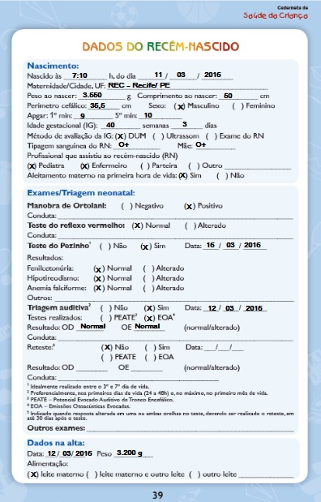

- Leonardo Pires dos Santos
- santos.leonardo2@hotmail.com
Avaliação de Rotina
Arthur, 5 meses de vida, aleitamento materno exclusivo segue para a quinta consulta de puericultura na mesma USF onde sua mãe fez o pré-natal. Ele é o caçula de uma família com três filhos. A mãe é dona de casa e se dedica em tempo integral às crianças. O profissional que o acompanha os recebe, faz os cumprimentos habituais; observa o comportamento da criança e da mãe atento ao relacionamento estabelecido entre eles. Em seguida, verifica o prontuário do lactente, os dados da consulta anterior e conversa com mãe e filho para obter informações relativas aos focos de atenção que serão avaliados durante a consulta. Arthur não tem histórico de internações ou de doenças respiratórias. Solicita a Caderneta de Saúde da Criança e realiza exame físico da criança. Na avaliação do desenvolvimento o profissional observa que Arthur “conversa” muito, é “super” simpático, sorrir para todos, mas que não levanta a cabeça quando colocado de bruços e não segura objetos mesmo que por poucos segundos.
